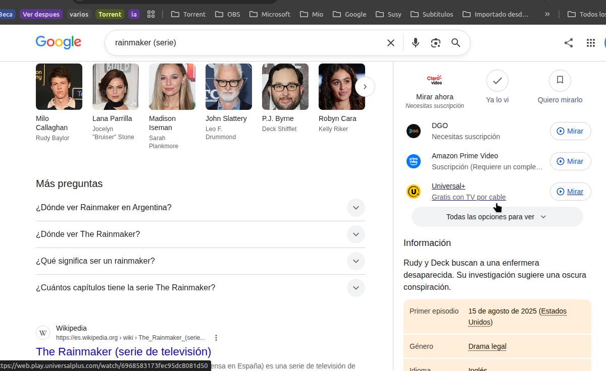
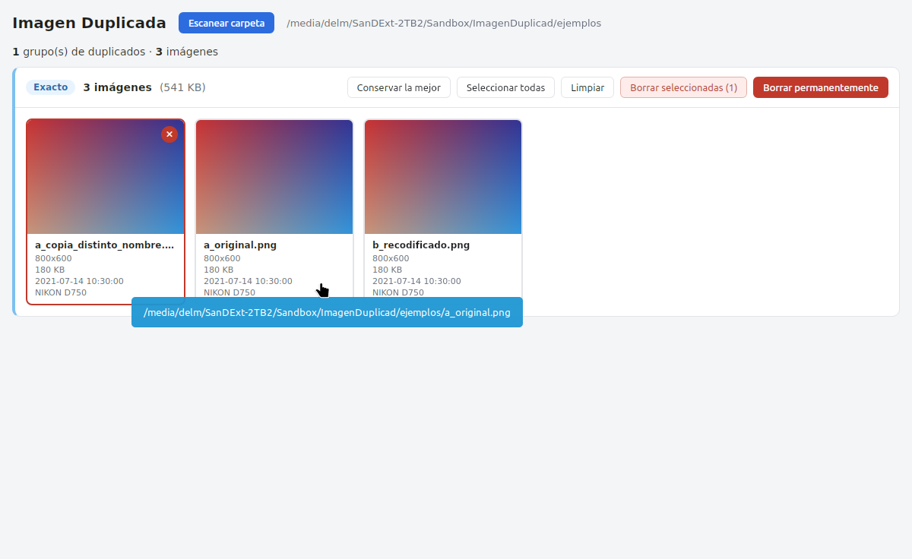
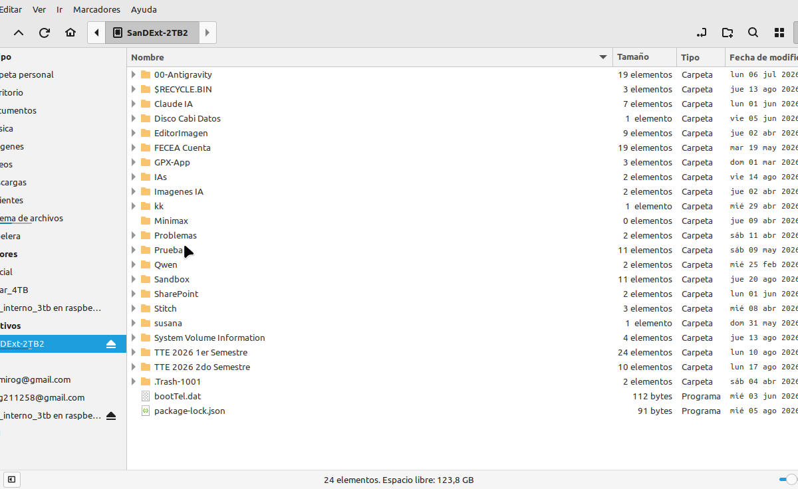
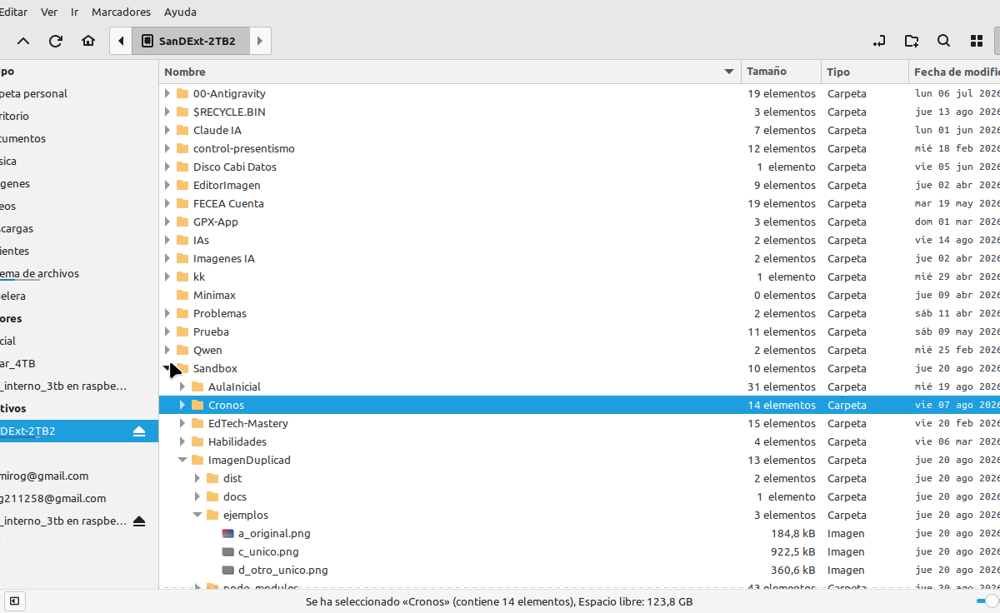

Compara por hash SHA-256 y metadatos EXIF para encontrar
copias exactas y probables duplicados recodificados
Con el tiempo, acumulamos cientos o miles de imagenes duplicadas en nuestro disco duro, con diferentes nombres y formatos.
Una misma foto puede llamarse IMG_001.jpg, foto-playa-2024.png, etc.
La misma imagen guardada en distintas calidades genera bytes diferentes.
Misma fecha, misma camara, mismas dimensiones. Solo cambio el nombre.
Con miles de imagenes, comparar una por una no es viable.
Imagen Duplicada escanea tu carpeta y agrupa automaticamente las imagenes duplicadas usando dos metodos de comparacion.




Selecciona automaticamente todas menos la de mayor resolucion.
Las imagenes van a la papelera de reciclaje. Puedes recuperarlas.
Elimina los archivos sin posibilidad de recuperacion.
"Conservar la mejor" marca para borrar todas menos la mas grande.
Cada grupo tiene una etiqueta de confianza para ayudarte a decidir.
Escaneo con walkdir, hash SHA-256, extraccion EXIF con kamadak-exif, miniaturas con image crate.
Interfaz con TypeScript, vista lateral, modal de preview, seleccion interactiva.
App de escritorio multiplataforma. Compila en Linux, Windows y macOS.
Algoritmo que fusiona grupos por hash y metadatos en una sola pasada.
Un solo codigo fuente, tres plataformas.
Paquete .deb y AppImage. Funciona en Ubuntu, Mint, Debian, Fedora.
Instalador .exe (NSIS) o .msi. Requiere WebView2 Runtime.
App .app y dmg. Nativo para Intel y Apple Silicon.
Solo cambian las dependencias del sistema. El logica es 100% compartida.
npm install
npm run tauri dev
npx tauri build
cd src-tauri && cargo test
Hash + Metadatos + Union-Find = Deteccion precisa